<mat-card class="matcard maximo minimo">
  <div class="container">
    <div class="row mt20">
      <div class="col-md-6">
        <div class="margins">
          <div class="card-body letraColor">
            <h1 class="letraNombre fs-1">Jorge Zimmermann</h1>
            <h1 class="letraNombre"></h1>
            <br />
            <p class="card-text fs-6">
              Soy un profesional con conocimientos y experiencia en tecnologías
              de desarrollo de software y herramientas de análisis de datos. Me
              apasiona resolver problemas y crear soluciones eficientes y estoy
              comprometido con el aprendizaje continuo.
              <br /><br />
              Explora mi portfolio para conocer más sobre mis proyectos y
              habilidades.
            </p>
            <p class="card-text mt40">
              <small style="color: burlywood;"
                >Si tienes alguna pregunta o estás interesado en colaborar, no
                dudes en contactarme.</small
              >
            </p>
          </div>
        </div>
      </div>
      <div class="col-md-6 sacarMargen esconder">
        
      </div>
    </div>
  </div>
</mat-card>
